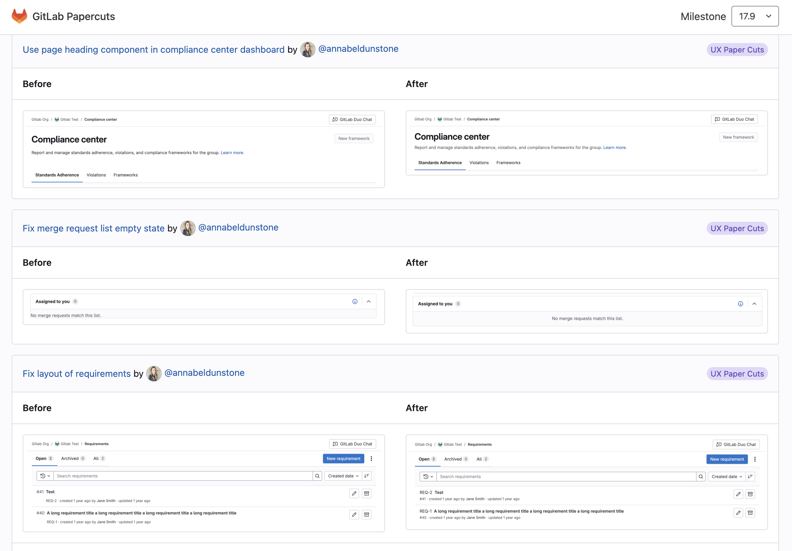
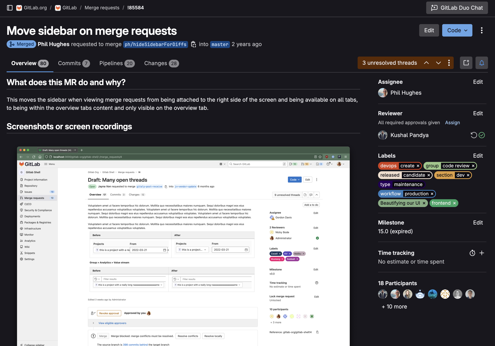

I'm Annabel and I'm a frontend developer product designer, currently at GitLab
Recent work
UX Papercuts

Design
Vue
Ruby
Feature flags
Project management
Merge requests

UX research
Design
About me
Experience
I'm a staff product designer with over 10 years of experience in the tech industry. With a background as a frontend developer, I bring a unique blend of design thinking and technical expertise to every project. I'm passionate about creating intuitive user experiences, and leveraging UX research to inform design decisions. My approach combines a deep understanding of both design and development to craft seamless, user-centered products.
Outside of work
When I’m not working, you can usually find me baking, drawing,
playing with my kids, or reading a good book.
I'm currently reading:
- The Happiness Hypothesis by Jonathan Haidt
- The Blue Hour by Paula Hawkins
- Anna Karenina by Leo Tolstoy (We did a book club at work last year reading War and Peace one chapter a day so I'm doing something similar this year!)